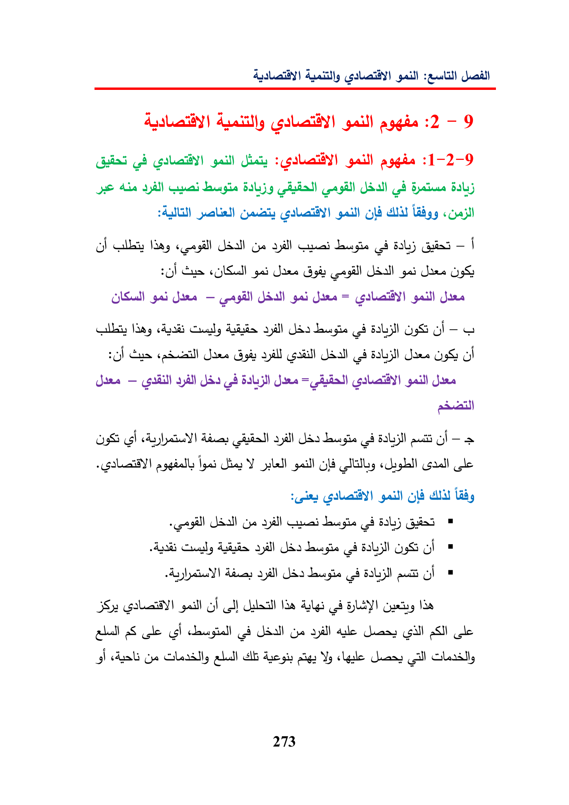

:euitillaggie:2-9ghgaluallfy)gaillJeAbe(gd«ULEGyeBaljGuia—|CusgaigisgaiO98gaiJane—gaiJira=gail)JiraNayGuayUl-G2g)CusG92)4Jars9Soldara—JasJee=Jaina5ilCg(ghautgl=aggiallsha:Ygaill(cle“eringGlacllladyGyoalldougie(8Baljayill(24olayillBabyaudGraGode28IdaaScolech8yepalldaleGillghGyoallsVyhans273